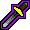
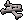
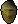
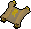

In this release
Quick prayers work again in every plugin that uses them, AIO Fighter stops wandering off after loot, and Firecape can now farm cape after cape. This release ships Microbot client 2.6.35 together with updates to eight Hub plugins.
Quick prayers work again
Say you set

Protect from Melee as your quick prayer, start AIO Fighter at Hill Giants with Prayer Style: Always On, and watch your character tank every hit with the prayer orb dark. You weren't doing anything wrong. Since a game update in October 2025, every plugin that used the quick-prayer orb was clicking a part of the minimap that does nothing.2.6.35 clicks the real orb again. Anything that turns quick prayers on or off works again, including AIO Fighter, Slayer, Pest Control, Giant Mole and Vire Watch.
The plugin clicks beside the orb. Quick prayers stay off.

The plugin clicks the Quick-prayers orb. Your prayers light up.
Quick prayers only turn on if you've picked some. Right-click the prayer orb, choose Setup, and select the prayers you want before starting a plugin that uses them.
AIO Fighter 2.2.11

Looting stays inside your fight areaSay you start AIO Fighter in the Lumbridge cow field with Attack Radius 10 and Bury Bones on. AIO Fighter measured loot range from wherever your character was standing, not from where you started. It would pick up bones 9 tiles east, then count anything within 10 tiles of that spot as in range, and so on. After a few kills you could be halfway to the river, picking up other players' bones.
Since 2.2.11, AIO Fighter only loots inside your fight area: within your Attack Radius of the center tile. That's where you started the plugin, or the tile you picked with Manual Center Tile. Items outside the area are left on the ground, and it no longer eats food to make room for them.
Skip World Spawns
If you fight somewhere the game respawns items on the ground, like coins or bones, AIO Fighter used to run off mid-fight to grab them, because they looked like any other loot. The new Skip World Spawns setting, on by default, ignores those items. Drops from your kills, and from other players' kills once they become visible to you, are still picked up.
AIO Fighter settings, Loot section
 Coinsworld spawn, skipped
Coinsworld spawn, skipped
Your dropsstill lootedFlick styles leave your own prayers alone
With Perfect Lazy Flick or Mixed Lazy Flick selected, every hit you took turned off all your prayers, even with Use prayer unticked. If you'd turned on Piety yourself and let AIO Fighter handle only attacking, Piety switched off on the first hit. Flick styles now only reset prayers when prayer handling is on and you're fighting an NPC.
- Scatter Ashes and Bury Bones pick up every ash or bone, whatever the price limits say.
- The minimum price counts everything of that item on one tile. Three 1,500 gp heads on one tile count as 4,500 gp.

Names in the item list match parts of names, sodragonalso matches Ensouled dragon head.
Other plugin updates
A new After exit setting. Leave it on Log out, or choose Get another cape to bank, regear and start another attempt after leaving the cave or respawning.
When you run out of a required supply, they log out cleanly and tell you which supply ran out. These three need client 2.6.32 or newer.
Progressive mode with banking deposits again instead of walking between the bank and the mine with a full inventory. Starting far from the chosen mine, or levelling up into a new one, no longer makes it walk back and forth without mining. A blank keep list no longer stalls drop mode.
Cipher clues no longer crash the solver while it works out where to walk.
 Guardians of the Rift, Sulphur Nagua1.5.11 · 2.0.4
Guardians of the Rift, Sulphur Nagua1.5.11 · 2.0.4No more crashes while the game is loading after a portal, teleport or world hop.
Client stability
- The walker no longer crashes when your position is briefly unknown during a teleport or region load, or when a route is cleared while its destination marker is being drawn.
- The Inventory Setups panel no longer errors while redrawing after a setup or section is removed.
- Special attack and ground-item helpers handle a missing spec bar or a logged-out player without crashing the running plugin.
- Looking up an item by a name that doesn't exist, for example a typo in a Grand Exchange setting, now returns "not found" instead of crashing.
How to update
Restart Microbot to pick up client 2.6.35. Plugin updates show up in the Microbot Hub panel inside the client. Something not working? Tell us on Discord.
Game images © Jagex Ltd., via the Old School RuneScape Wiki.